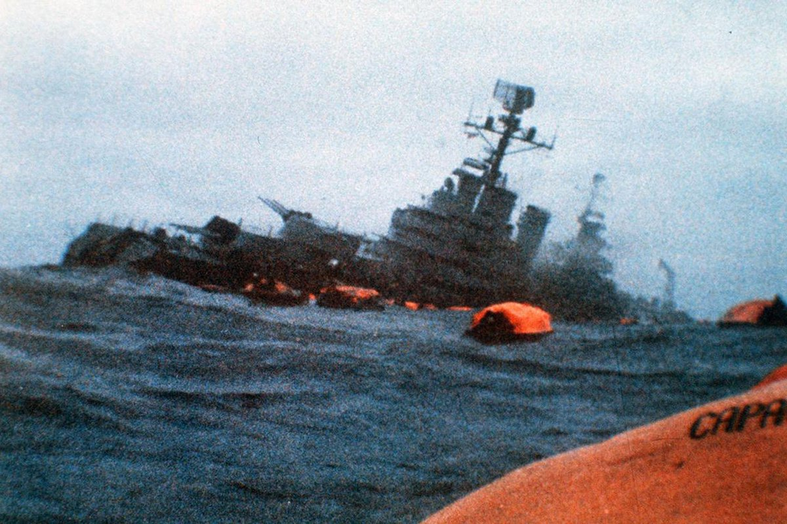

Inicio de la guerra
Llegada a la década de 1980, y con 149 años de dominación británica en el archipiélago, la
dictadura militar que controlaba Argentina decidió promover un plan de control bajo el
territorio.
Es importante resaltar que, en esa época, la dictadura argentina, entonces comandada por el
general Galtieri, se veía presionada por los problemas sociales y económicos que colocaban a
la población contra el gobierno. De esta manera, el plan sería una forma desesperada de
recuperar la imagen del gobierno por medio de la guerra.
El 2 de abril de 1982, las fuerzas armadas de Argentina invadieron las Islas Malvinas (Islas
Falklands para los británicos), situadas a 464 km de la costa argentina. El archipiélago, aunque
poco habitado, tiene una posición geográfica estratégica.
Aquí dio inicio a la guerra de Malvinas.
Desarrollo de la guerra de Malvinas
El conflicto en las Malvinas, a pesar de su pequeña extensión territorial, exigía que las fuerzas
militares implicadas estuvieran preparadas para enfrentar el clima hostil marcado por nevadas
y lluvias constantes. La primera invasión realizada por los argentinos fue victoriosa, por lo
tanto se celebró en las calles de Argentina. Miles ocuparon el frente de la Casa Rosada, sede
del gobierno argentino en Buenos Aires.
El Reino Unido intentó resolver de forma pacífica, exigiendo la salida inmediata de las tropas
argentinas de la región. Sin embargo, con el rechazo argentino, los británicos enviaron fuerzas
militares listas para el combate al archipiélago.
Mediante la negativa del gobierno Galtieri, la primera ministra británica Margaret Thatcher ordenó la preparación de las fuerzas británicas para un conflicto contra los argentinos.
El mismo día, la Corona británica anunció el corte de relaciones entre Gran Bretaña y
Argentina. La primer ministro británico Margaret Thatcher envió un poderoso contraataque.
Fueron 27 mil soldados y 111 buques de guerra.
El hundimiento del ARA General Belgrano
El hundimiento del crucero ARA General Belgrano se produjo el 2 de mayo de 1982, durante la guerra de las Malvinas, a consecuencia del ataque del submarino nuclear británico HMS Conqueror. El hundimiento del crucero argentino permitió a los británicos la superioridad naval en la zona. El ataque causó la muerte de 323 argentinos prácticamente la mitad de las bajas de ese país en todo el conflicto El hecho generó una polémica en ambos países, al haberse producido fuera del área de exclusión establecida por el Gobierno británico alrededor de las islas. Es el único caso de un barco hundido en guerra por un submarino nuclear.
La evidente superioridad bélica inglesa podría anticipar el resultado de este conflicto. Después de una fase de relativo equilibrio entre las fuerzas militares involucradas en la guerra, los británicos obtenían victorias en diferentes frentes.
